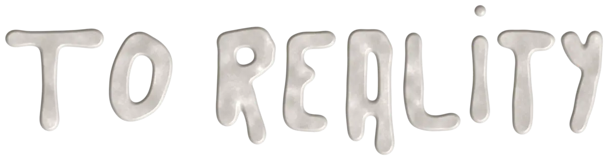

From idea to reality

Brands come to us with abstract concepts and no clear focus on what story to tell. My job is to find that story, turn it into a strategy and lead the teams that bring it to life, from the first meeting to the last piece delivered.
1
Concept
I define the story the brand needs to tell right now and the creative territory that supports it.
2
Strategy
I translate that concept into a content plan: formats, channels, talent and production schedule.
3
Direction
I lead teams of around 15 people across production, shooting, generative AI and post-production, making sure every piece stays true to the concept.
4
Execution
I see it through to the real world: influencer campaigns, out-of-home, live events and final delivery.